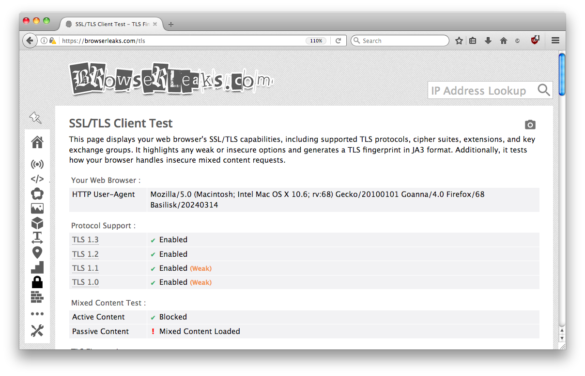
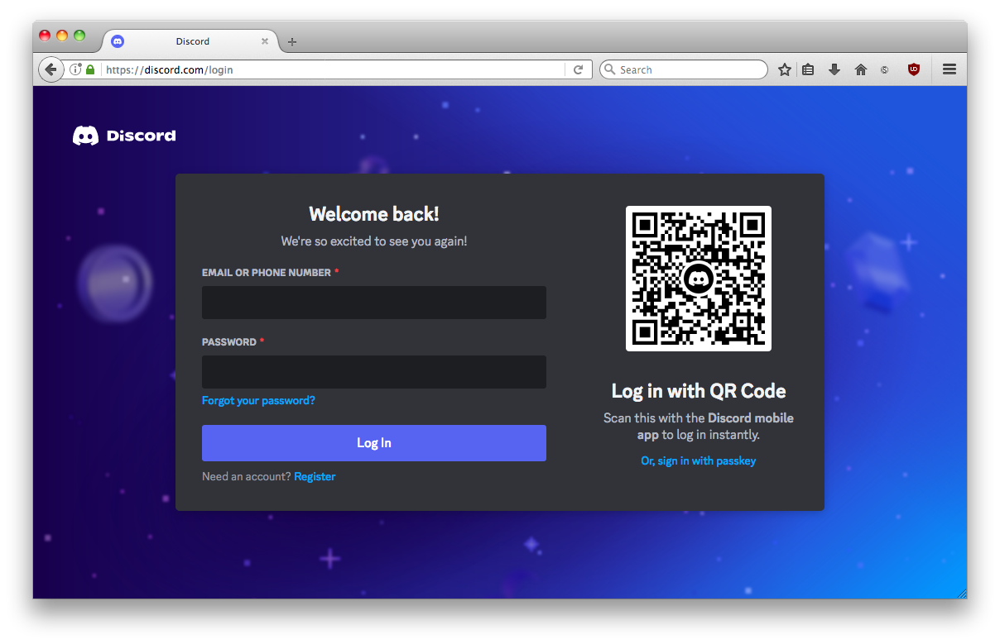
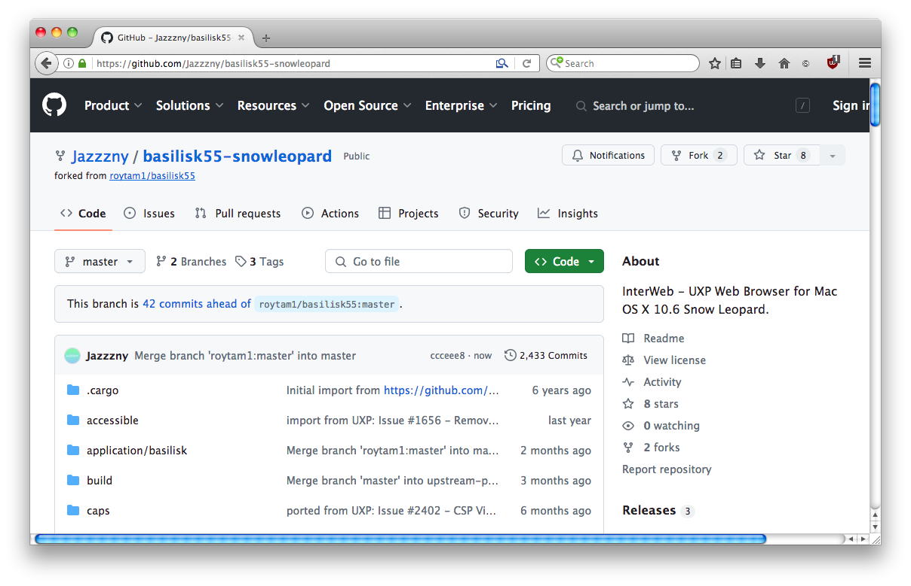
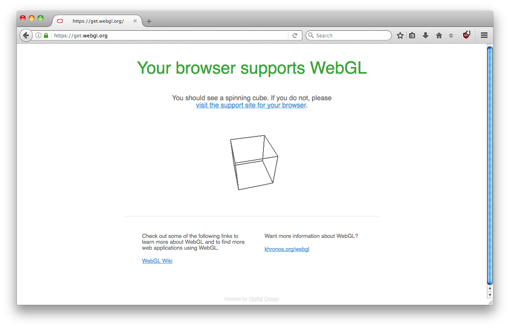

A secure, modern, and open-source web browser for Mac OS X 10.6. Bring new life to your aging Mac.
Download InterWeb
Showcase

Secure - InterWeb has full support for TLS 1.3 and modern ciphers, letting you browse the entire web.

Compliant - InterWeb vastly outpaces other Snow Leopard-compatible browsers in compatibility with modern websites through HTML5, CSS3, and Javascript.

Open Source - InterWeb is based on Roytam1's Möbius codebase, which is open-source and maintained.

Featureful - InterWeb supports standards including WebGL, Adobe Flash (and other plugins), color emoji, and more.
Additional Downloads